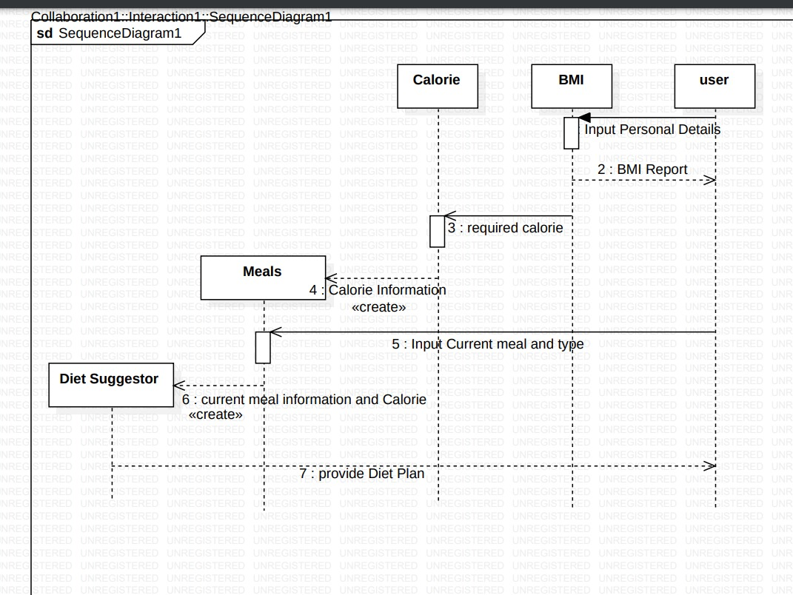

Sequence Diagram
Sequence diagram:Simple interactions between items are shown in a sequence diagram.Actors, lifelines,
and messages such as create, delete, self, respond, lost, and synchronous and asynchronous messages are
all included in the sequence diagram.This graphic illustrates how programme objects communicate with one
another to execute tasks by passing internal messages.